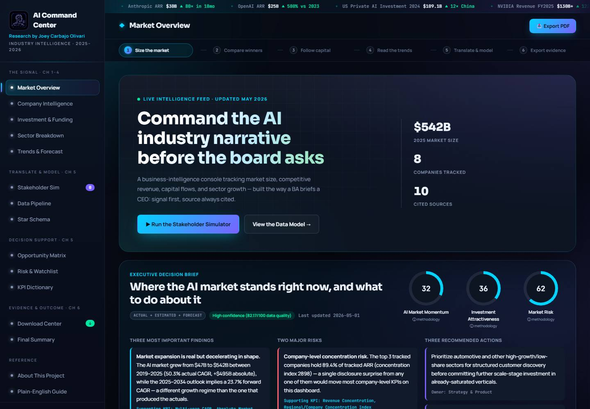

AI Industry Command Center
From market metrics to a stakeholder decision brief.

From a question to an actionable briefing.
Explore a simplified illustration of how the project connects stakeholder questions, metrics and decision context.
Start with what the stakeholder needs to decide
Illustrative question: Which AI-industry signals suggest an emerging opportunity, and how much of the evidence is estimated or forecast?
Make each indicator traceable
Before presenting a trend, define its calculation, source, timeframe and uncertainty classification. The documented design separates actual, estimated, forecast and illustrative figures.
Connect the finding to a next question
Example briefing structure: observation → supporting KPI → caveat → suggested investigation. This is a decision-support framework, not an investment recommendation.
Illustrative workflow. No live market feed, client adoption or measured business impact is implied.
The business question
AI-market information mixes company performance, investment, forecasts, and uncertain estimates. A collection of charts can show activity without explaining what a stakeholder should do with it.
This project asks: How can market metrics support a useful executive conversation? The goal is to connect a finding to its implication, supporting evidence, and a sensible next investigation.
Scope and approach
This independent portfolio project combines business-analysis artifacts with a working browser dashboard. Its scope includes stakeholder scenarios, metric definitions, calculation logic, and presentation.
- Frame the request: the stakeholder simulator translates vague executive questions into proposed KPIs, sources, dimensions, and outputs.
- Define the measures: the KPI dictionary records formulas, purpose, interpretation, and limitations.
- Explain the model: documentation describes a fact table, seven dimensions, and a source-to-dashboard pipeline.
- Present the decision: executive briefs and insight cards connect findings with business implications and follow-up actions.
The documented ETL and schema describe the analytical design. They should not be read as proof of a deployed warehouse or production data pipeline.
Three decisions behind the dashboard
Keep the calculation logic separate.
Raw datasets, pure metric functions, and interface rendering live in separate modules. This makes the route from source values to a displayed metric easier to inspect and reduces duplicated formulas.
Pair the chart with an explanation.
Insight cards add the business implication, suggested action, stakeholder, confidence, and supporting KPI. The dashboard gives someone a starting point for a conversation, rather than leaving every interpretation implicit.
Expose uncertainty.
Data records distinguish actual, estimated, forecast, and illustrative values. Composite scores document their weights; unavailable calculations show an insufficient-data state.
What you can inspect
The deliverable is an interactive static dashboard with an executive brief, opportunity matrix, risk watchlist, KPI dictionary, and dataset exports.
Try this review path: start with the executive brief, inspect a metric in the KPI dictionary, then look at its assumptions and source context in the governance section.
Limitations and next validation
The project includes estimated and illustrative data, scenarios, and documented composite scores. It is a portfolio demonstration, not a live market feed or an investment recommendation.
No client adoption, revenue improvement, or production business outcome is claimed. A useful next validation would be a stakeholder walkthrough: can someone trace a recommendation to its metric, source, and uncertainty without help?